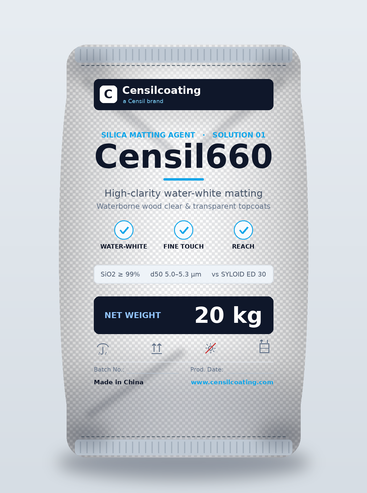
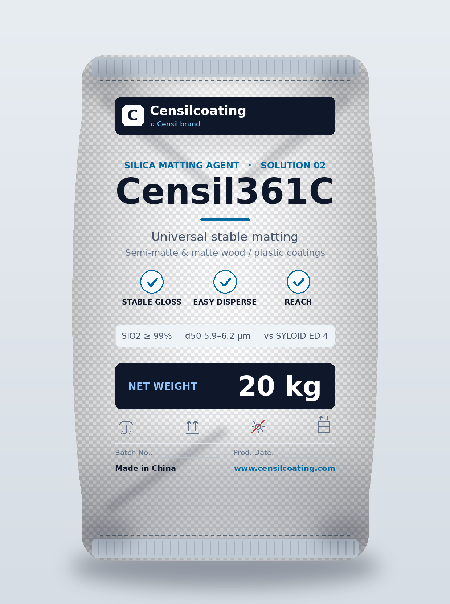
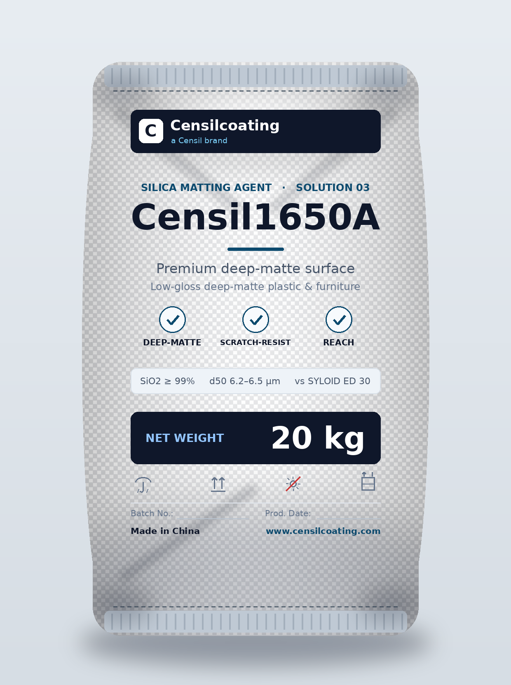

LEAD
Censil660
High-Clarity Water-White
Water-white clear topcoats and high-transparency wood-grain clears. Matte with zero haze on dark solid wood.
- d50
- 5.0–5.3 μm
- Benchmark
- SYLOID® ED 30
- Finish
- High-clarity matte
Product Range
Waterborne-focused matting agents — engineered where clarity, touch and storage stability matter most.
Every grade is built as a 1:1 drop-in for a specific European benchmark, with particle size, pore volume and surface area mapped to the finish you need.
REACH compliant
Declaration of Conformity provided
Low-VOC ready
Designed for waterborne systems
Amorphous silica
No crystalline silica
Supplied in 20 kg multi-wall bags, palletized for container export. Lead grades for each solution:

Censil660 · 20 kg
Solution 01 · High-clarity water-white · vs SYLOID ED 30

Censil361C · 20 kg
Solution 02 · Universal stable · vs SYLOID ED 4

Censil1650A · 20 kg
Solution 03 · Premium deep-matte · vs SYLOID ED 30
Also available in the same 20 kg format: Censil651, Censil351C, Censil1531D and Censil3851. Custom packaging on request.
Seven grades engineered for waterborne wood and plastic coatings — each tuned by particle size and surface treatment to a target finish and import benchmark.
High-Clarity Water-White
Water-white clear topcoats and high-transparency wood-grain clears. Matte with zero haze on dark solid wood.
Fine-Touch Clarity
Finer particle route for high-clarity semi/matte clears — emphasizes transparency, smoothness and a fine hand-feel.
Universal Fine
A fine, universal grade balancing surface appearance with broad stability — a smooth bridge toward high-clarity systems.
Universal Stable
The workhorse for semi-matte to matte wood and plastic coatings — high matting efficiency with a stable, scalable window.
Cost-Optimized
A stable, cost-efficient transition grade — ideal for first-round substitution, small trials and price-sensitive projects.
Deep-Matte Premium
Low-gloss deep-matte for high-end plastic coatings and tactile furniture — uniform, fine and scratch-resistant, never coarse.
Special Reserve
A large-particle reserve grade for hard, extreme low-gloss cases and special plastic / high-end industrial surfaces.
Find the recommended grade by application, system and target finish — built for waterborne wood and plastic coatings.
| Segment | System | Target finish | Recommended grades |
|---|---|---|---|
| Wood coatings | Waterborne clear topcoat (acrylic / PUD / UV) | High-clarity matte | Censil660, Censil651 |
| Wood coatings | Waterborne | Semi-matte / matte | Censil361C, Censil351C |
| Wood coatings | Waterborne (first import / cost-sensitive) | Universal matte | Censil1531D |
| Plastic coatings | Waterborne (thin film 10–15μm) | Semi-matte / matte | Censil361C |
| Plastic coatings | Waterborne (3C / automotive trim) | Deep-matte | Censil1650A, Censil3851 |
| Premium furniture | Waterborne tactile finish | Low-gloss deep-matte | Censil1650A, Censil361C |
| Grade | Particle size d50 (μm) | Pore volume (mL/g) | Surface area (m²/g) | 1:1 benchmark | Best for |
|---|---|---|---|---|---|
| Censil660 | 5.0 – 5.3 | 1.6 – 1.8 | 250 – 280 | SYLOID® ED 30 | High-clarity water-white clear topcoats; "water-white" appearance |
| Censil651 | 4.9 – 5.2 | 1.6 – 1.8 | 250 – 280 | SYLOID® ED 2 | Fine touch & smooth surface in high-clarity semi/matte clears |
| Censil351C | 4.8 – 5.1 | 1.6 – 1.8 | 250 – 280 | SYLOID® ED 3 | Fine, universal finishes balancing appearance & stability |
| Censil361C | 5.9 – 6.2 | 1.6 – 1.8 | 250 – 280 | SYLOID® ED 4 | Universal semi-matte/matte; higher matting efficiency |
| Censil1531D | 5.3 – 5.6 | 1.6 – 1.8 | 250 – 280 | Cost-optimized | First-round substitution, small trials, cost-sensitive projects |
| Censil1650A | 6.2 – 6.5 | 1.6 – 1.8 | 250 – 280 | SYLOID® ED 30 | Low-gloss deep-matte; premium surface development |
| Censil3851 | 8.5 – 9.0 | 1.6 – 1.8 | 250 – 280 | ACEMATT® TS 100 | Special-reserve grade for extreme low-gloss / hard plastic surfaces |
Values are typical guidance figures; final performance must be validated against your resin system, dispersion method and additive package. Full Technical Data Sheets (TDS) available on request.
Shared characteristics across the Censil silica matting range. Grade-specific particle size, pore volume and surface area are listed in the table above.
*Surface treatment (organic / PE-wax modification) is grade-dependent. Typical guidance values — refer to the grade TDS for the controlled specification.
We recommend a "lead + support" structure rather than a single grade, so we can match different customer needs precisely.
The technology
Performance in high-humidity waterborne coatings comes from surface chemistry and particle engineering — not just raw silica.
Surface wax treatment prevents hard sedimentation in low-viscosity systems and delivers a fine, smooth touch.
Tight d50 control (3.5–9.0μm) balances transparency and matting efficiency for water-white clarity.
Paired with fumed-silica thixotropy for anti-settling stability across the waterborne window.
Amorphous, high-purity dry basis — no crystalline silica — for zero haze on dark substrates.
Everything your lab and procurement team need to evaluate and approve a switch — sent on request.
Technical Data Sheets (TDS) — CensilMatt 660 / 370A and full range
1:1 benchmark sheet — physicochemical parity & application advantages (EN/CN)
REACH Declaration of Conformity — compliance documentation (DoC)
Safety Data Sheet (SDS) — handling, storage and safety information
Send us the grade you currently use and your target gloss — we'll recommend the right lead + support pairing and ship a free 2 kg sample.
Request a Free 2 kg Sample